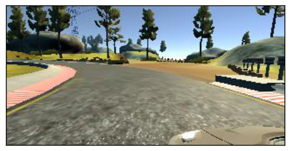
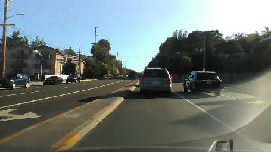

Imitation Learning Lab
Introduction
This lab provides an introduction to end-to-end imitation learning for vision-only navigation of a racetrack. Let's break that down:
- We will train a deep learning model - specifically, a convolutional neural network (CNN) - to predict steering angles from images.
- Here, "imitation learning" refers to a branch of machine learning which focuses on imitating behavior from human-provided examples. In our case, we will drive a car around a track several times to provide examples for the CNN to mimic.
- We will contrast this with our next lab on "reinforcement learning" where a robot agent is tasked to explore an environment and no examples are given.
- "Vision-only" refers to using an RGB camera as the only input to the machine learning algorithm.
- LIDAR, depth estimation (e.g., from stereo cameras), and vehicle IMU data are not used.
- "End-to-end learning" is shorthand for machine learning objectives which estimate or predict an output from unprocessed input data. The CNN will learn to regress a steering angle (i.e., an actuation for the Ackermann controller) directly from pixels, without any manual labeling or preprocessing of salient input features (corners, walls, floors, etc.)
We will start by driving a simulated car around a virtual racetrack and collecting camera data from the rendered game engine, as well as our game inputs. We will define a CNN that will predict similar game inputs in order for the car to complete the same track autonomously. Then using the same CNN model definition, we will train the model using camera data and steering angles collected from the RACECAR platform in a real-world environment, the basement in Stata Center.
In simulation:
| Lake Track | Jungle Track |
|---|---|
 |
 |
In Stata basement:
The CNN architecture we will use is a slightly modified version of PilotNet from Nvidia:
- Nvidia's blog post introducing the concept and their results
- Nvidia's PilotNet paper
- Udacity's Unity3D-based Self-Driving-Car Simulator and Naoki Shibuya's
drive.pycontributions
Part 1: Install required Python libraries and the simulation environment
TensorFlow, a deep-learning framework
You first need to install miniconda to install TensorFlow. Download the Python 3.7 version of miniconda and follow the installation instructions for your platform.
Warning
We will be using Python 3.7 to define and train the PilotNet CNN model. Once we save a trained model (also known as saving weights), we can later import the saved model in a Python 2 ROS environment on the RACECAR.
# Use TensorFlow without GPU
conda env create -f environment.yml
# Use TensorFlow with GPU
conda env create -f environment-gpu.yml
Udacity self-driving-car simulator
Download the Udacity Term 1 simulator for your platform:
The full Unity3D source code of this simulator is available here, as well as other simulators for LIDAR data, waypoint-following, traffic, etc. We will only be using the simulator linked above.
Extract the simulator (which will create a folder called beta_simulator_linux/):
$ unzip term1-simulator-linux.zip
On Linux, you will need to make the simulator executable, via the chmod command:
$ chmod +x ./beta_simulator_linux/beta_simulator.x86_64
Part 2: Defining the PilotNet model
Let us take a closer look at the CNN architecture for PilotNet:

In this lab, we will command a fixed driving velocity and only regress steering angles from images using PilotNet. Hence, the PilotNet CNN has a single output. Using TensorFlow's Keras API, let us look at an implementation of the above network in code:
from tensorflow.keras.layers import Lambda, Conv2D, MaxPooling2D, Dropout, Dense, Flatten
from tensorflow.keras.models import Sequential
# you will need to crop or shrink images to the dimensions you choose here:
IMAGE_HEIGHT, IMAGE_WIDTH, IMAGE_CHANNELS = 66, 200, 3
INPUT_SHAPE = (IMAGE_HEIGHT, IMAGE_WIDTH, IMAGE_CHANNELS)
def build_model(dropout_rate=0.5):
model = Sequential()
model.add(Lambda(lambda x: x/127.5-1.0, input_shape=INPUT_SHAPE)) #normalizes image data
model.add(Conv2D(24, (5,5), strides=(2, 2), activation='elu'))
model.add(Conv2D(36, (5,5), strides=(2, 2), activation='elu'))
model.add(Conv2D(48, (5,5), strides=(2, 2), activation='elu'))
model.add(Conv2D(64, (3,3), activation='elu'))
model.add(Conv2D(64, (3,3), activation='elu'))
model.add(Dropout(dropout_rate))
model.add(Flatten())
model.add(Dense(100, activation='elu'))
model.add(Dense(50, activation='elu'))
model.add(Dense(10, activation='elu'))
model.add(Dense(1))
model.summary()
return model
Exercise
How many parameters does each layer represent? What is the effect of changing the input size on the total number of parameters in the network? Why?
Hint: use model.summary() as a way to explore the effect of changing input size.
For more on TensorFlow's Keras API, click here.
Note
Note that Keras will disable Dropout regularization at inference time. See here for details.
Model Output and Optimization
The output of this model is a single neuron, which corresponds to the servo or steering angle to command the car with. In the section on Training we will normalize the output angles to fit between (-1, 1) (Question: Why would we prefer to normalize the data?)
We will use the Adam optimizer with a loss function (i.e., cost or objective function) that minimizes the mean square error betwen the ground-truth steering angles and the currently predicted steering angles:
model = build_model()
model.compile(loss='mean_squared_error', optimizer=Adam(lr=1.0e-4))
Optional Exercise
ith only a few changes to the above model and loss definitions, you can add a second output to estimate the velocity as well.
Part 3: Training the Model
We will use three cameras mounted on the simulated car and the real-world RACECAR to collect training data. This excerpt from Nvidia's blog post explains why doing so is useful:
Training data contains single images sampled from the video, paired with the corresponding steering command (1/r). Training with data from only the human driver is not sufficient; the network must also learn how to recover from any mistakes, or the car will slowly drift off the road. The training data is therefore augmented with additional images that show the car in different shifts from the center of the lane and rotations from the direction of the road.
The images for two specific off-center shifts can be obtained from the left and the right cameras. Additional shifts between the cameras and all rotations are simulated through viewpoint transformation of the image from the nearest camera. Precise viewpoint transformation requires 3D scene knowledge which we don’t have, so we approximate the transformation by assuming all points below the horizon are on flat ground, and all points above the horizon are infinitely far away. This works fine for flat terrain
Here is a diagram from Nvidia that describes the training and data augmentation process for PilotNet:

In Simulation
First, create a new folder to store training data from the simulator, e.g. training/) and then start the simulator. On linux:
$ ./beta_simulator_linux/beta_simulator.x86_64
Now launch the Training mode and configure the simulator to save data to the folder you created:

Once you have configured a folder to record your training data into, press record again (or r as a shortcut) and start to drive the car around (you can use WASD or your arrow keys on your keyboard). If this is your first time running the simulator, stop recording after a few seconds, to inspect the saved results.
The simulator will save three camera views from the car: left, center, and right camera views from the bumper of the car (as jpgs) along with the image filenames and the current steering angle in driving_log.csv.
Warning
Recording will generate a lot of files! Too many files in a single directory can cause performance issues, e.g., when generating thumbnails.
Once you are ready to record full laps of the course, I recommend keeping each recording session to a few laps of the track, and making multiple new folders. This will help to keep the number of files within each folder low, e.g., two_laps_run1/, two_laps_run2/, etc, or making a folder for tricky sections of the course, e.g., bridge_section_run1/. It is easy to concatenate the resulting CSVs in python (using simple list concatenation with +)
In the training/ folder (or whichever folder you just created), you should see driving_log.csv and another folder IMG/.
driving_log.csv contains path locations for the three camera views with associated timestamps (sequentially increasing), and the saved steering angle (without a CSV header):
| Center | Left | Right | Steering Angle | Throttle | Brake | Speed |
|---|---|---|---|---|---|---|
center_2019_03_11_12_22_15_385.jpg |
left_2019_03_11_12_22_15_385.jpg |
right_2019_03_11_12_22_15_385.jpg |
0 | 0 | 0 | 0 |
center_2019_03_11_12_22_15_502.jpg |
left_2019_03_11_12_22_15_502.jpg |
right_2019_03_11_12_22_15_502.jpg |
0 | 0 | 0 | 0 |
center_2019_03_11_12_22_15_594.jpg |
left_2019_03_11_12_22_15_594.jpg |
right_2019_03_11_12_22_15_594.jpg |
0 | 0 | 0 | 0 |
Note
If you would like to change some of the parameters, such as the saved image resolution, or even define a new track, you can rebuild and edit the simulator using Unity3D.
See this section of the Udacity source code if you are curious how the image files and CSV data are generated.
In the training/IMG/ folder you will find .jpg files with the following naming scheme corresponding to the above CSV:
| Left | Center | Right |
|---|---|---|
 |
||
center_2019_03_11_12_22_15_385.jpg |
left_2019_03_11_12_22_15_385.jpg |
right_2019_03_11_12_22_15_385.jpg |
Batch Generation and Checkpointing
For efficient training on a GPU, multiple examples are sent at once in a batch onto the GPU in a single copy operation, and the results of backpropagation are returned from the GPU back to the CPU.
You will want to checkpoint your model after each epoch of training.
checkpoint = ModelCheckpoint('imitationlearning-{epoch:03d}.h5',
monitor='val_loss',
verbose=0,
save_best_only=False,
mode='auto')
def batch_generator(image_paths, steering_angles, batch_size):
"""
Generate training image give image paths and associated steering angles
"""
images = np.empty([batch_size, IMAGE_HEIGHT, IMAGE_WIDTH, IMAGE_CHANNELS])
steers = np.empty(batch_size)
while True:
i = 0
for index in np.random.permutation(len(image_paths)):
##############################################
# TODO: add your augmentation code here! ####
# NOTE: you may want to disable ####
# augmentation when validating! ####
##############################################
image = cv.imread(image_paths[index])
cropped = image[95:-95, 128:-127, :]
images[i] = cropped
steering_angle = steering_angles[index]
steers[i] = steering_angle
i += 1
if i == batch_size:
break
yield images, steers
BATCH_SIZE=20
model.fit_generator(generator=batch_generator(X_train, y_train, batch_size=BATCH_SIZE),
steps_per_epoch=20000,
epochs=10,
validation_data=batch_generator(X_valid, y_valid, batch_size=BATCH_SIZE),
# https://stackoverflow.com/a/45944225
validation_steps=len(X_valid) // BATCH_SIZE,
callbacks=[checkpoint],
verbose=1)
Image Augmentation
Example transformations:
Center Image

Left and right Images
def choose_image(data_dir, center, left, right, steering_angle):
"""
Randomly choose an image from the center, left or right, and adjust
the steering angle.
"""
choice = np.random.choice(3)
if choice == 0:
return load_image(data_dir, left), steering_angle + 0.2
elif choice == 1:
return load_image(data_dir, right), steering_angle - 0.2
return load_image(data_dir, center), steering_angle
 
Flipped Image
if np.random.rand() < 0.5:
image = cv2.flip(image, 1)
steering_angle = -steering_angle
return image, steering_angle

Translated Image
def random_translate(image, steering_angle, range_x, range_y):
"""
Randomly shift the image virtially and horizontally (translation).
"""
trans_x = range_x * (np.random.rand() - 0.5)
trans_y = range_y * (np.random.rand() - 0.5)
steering_angle += trans_x * 0.002
trans_m = np.float32([[1, 0, trans_x], [0, 1, trans_y]])
height, width = image.shape[:2]
image = cv2.warpAffine(image, trans_m, (width, height))
return image, steering_angle

Servo histograms
It is important to ensure the train/test split of the data you have collected have similar driving condition represented. For instance, here is the histogram of servo angles in the training and testing data used above:

Checkpointing
checkpoint = ModelCheckpoint('markmodel2-{epoch:03d}.h5',
monitor='val_loss',
verbose=0,
save_best_only=False,
mode='auto')
[Optional] Extending to more general environments
It is possible to train a network with driving data from public roads, in order to experiment with how it affects the performance of your car in Stata basement.
Danger
Obviously, you should not test anything on public roads yourself, either on a RACECAR or any other car. Be safe and responsible!



Part 4: RACECAR data collection and training
You will need to save images to the car's SSD:
In zed.launch ($ roscd zed_wrapper):
<arg name="resolution" default="3" /> <!--0=RESOLUTION_HD2K, 1=RESOLUTION_HD1080, 2=RESOLUTION_HD720, 3=RESOLUTION_VGA -->
<arg name="frame_rate" default="15" />
In TODO launch/record_bag.launch:
args="--output-prefix $(arg saveas) $(arg extra_args) /joy /racecar_drive /vesc/sensors/core /velodyne_packets /scan /imu/data_raw /imu/data /imu/mag /zed/left/image_raw_color/compressed /zed/right/image_raw_color/compressed /zed/left/camera_info /zed/right/camera_info" />
Then, to record the rosbag TODO:
$ roslaunch racecar_bringup record_bag.launch saveas:=/media/ssd/rosbags/
Part 5: Running inference on RACECAR
The following script will load a pre-trained model and drive the car through Stata basement:
$ # Optional -- mount SSD for data collection
$ # sudo mount -t auto /dev/sda1 /media/ssd/
$ roslaunch racecar_bringup base.launch teleop:=true
$ roslaunch zed_wrapper zed.launch
$ cd ~/pilotnet # or wherever you have basement-006.h5 weights stored
$ python pilotnet_drive.py